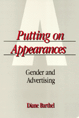

<body bgcolor="#FFFFFF" text="#000000" link="#0000FF" vlink="#CC0000" alink="#CC0000"><center><hr width="350" size="1" align="center" noshade>A lively critical analysis that reveals the overlooked and underestimated depth of cultural meaning behind contemporary American advertising<hr width="350" size="1" align="center" noshade><p><a href="https://cdcshoppingcart.uchicago.edu/Cart/ChicagoBook.aspx?ISBN=9780877225287&&PRESS=temple" target="_top">Buy this book!</a> | <a href="https://cdcshoppingcart.uchicago.edu/Cart/Cart.aspx?PRESS=temple" target="_top">View Cart</a> | <a href="https://cdcshoppingcart.uchicago.edu/Cart/Cart.aspx?PRESS=temple" target="_top">Check Out</a></p><p></p></center><!--none//--><h1>Putting on Appearances</h1>
<H2>Gender and Advertising</H2>
<h3>Diane Barthel</h3>
<P>cloth 0-87722-528-1 $34.95, Sep 88, <FONT COLOR=#990033>Out of Print</FONT>
<br>paper 0-87722-661-X $30.95, Aug 89, <FONT COLOR=#990033>Available</FONT>
<br>Electronic Book 1-43990-401-4 $30.95 <FONT COLOR=#990033>Out of Print</FONT>
<BR> 232 pp
5.25x8.25
</P><BLOCKQUOTE><I>"[Barthel] carefully and meticulously traces, through a myriad of pointed examples, how advertising hooks us by manipulating women's low self-esteem and then promising to provide the means of achieving beauty, power, success."</I>
<br>&#151<b><I>New Directions for Women</I></b><I></I></BLOCKQUOTE>
<p>In this lively critical analysis, Diane Barthel reveals the previously overlooked and underestimated depth of cultural meaning behind contemporary American advertising. Focusing mainly on ads for beauty products directed at women, she demonstrates how stereotypical gender identities are emphasized and how advertising itself creates a gendered relationship with the consumer. She explores psychological, sociological, and cultural messages in advertising to show how <I>Putting on Appearances</I> is anything but a purely personal matter, and how the social realities in which we are forced to live are conditioned by the personal appearances we choose to create.
<p>Most advertisements are not sexually obvious, but rely instead on sexual story-telling in which seduction, deception, and passion are portrayed as acceptable means for achieving selfhood. Advertisements that proclaim, "Now is the time to paint your knees" speak with one form of authority: those that present the voice of the all-knowing scientist or the nurturing mother rely on others. Celebrities figure as professional beauties and wise older sisters, sharing their secrets with the consumer. "The Gentle Treatment Great Model Search Made Me a Star. Now it�s your turn."
<p>Inseparable from the clothes we wear and the products we use are our ideas and fantasies about our bodies. Beauty products present beauty rituals as transcendent occasions, and diet products call up religious imagery of guilt and salvation. The body itself is to be anxiously manipulated and systematically worked over until the consumer "turns her body into...an advertisement for herself, a complicated sign to be read and admired."
<BR>&nbsp;<h2>Excerpt</h2><P>Excerpt available at <a href="http://www.temple.edu/tempress">www.temple.edu/tempress</a></p>
<BR>&nbsp;<h2>Reviews</h2>
<p><I>"I found the impact of </I>Putting on Appearances<I> by Diane Barthel exceptionally powerful. She analyzes the almost painful ways in which women are seduced by advertisements to accept their low self image and the advertiser�s solution. One might well conclude from the ads surveyed in this book that the main occupation of women should be achieving the right skin, weight, hair, nails, and especially age. I was struck by how little advertising has changed since Erving Goffman first called it to our attention. Barthel extends the scope of his work and brings it up to date. The moral for feminists to draw is that although there are many miles to go before we sleep. Barthel's work will keep us on our toes."</I>
<br>&#151<b>Jessie Bernard</b>
<BR>&nbsp;<H2>About the Author(s)</H2>
<table><tr><td valign="top"><img src="/tempress/authors/458_au.gif" height="90" width="75"></td><td width="100%" valign="middle"><p><b>Diane Barthel</b> is Associate Professor of Sociology at State University of New York, Stony Brook.</P></td></tr></table>
<BR><H2>Subject Categories</H2>
<p><A HREF="/tempress/women.html" TARGET="_top">Women's Studies</a>
<BR><A HREF="/tempress/sociology.html" TARGET="_top">Sociology</a>
<BR><A HREF="/tempress/general.html" TARGET="_top">General Interest</a>
</p>
<BR><h2 class="inpageheading">In the series</H2>
<P><I><a href="http://www.temple.edu/tempress/women_political.html" onMouseOver="window.status='Click for other books in this series!'; return true;" onMouseOut="window.status=''; return true;" target="_top">Women in the Political Economy</a></i>, edited by Ronnie J. Steinberg.
</p><p>No longer active.<p><i>Women in the Political Economy</i>, edited by Ronnie J. Steinberg, includes books on women and issues of work, family, social movements, politics, feminism, and empowerment. It emphasizes women's roles in society and the social construction of gender and also explores current policy issues like comparable worth, international development, job training, and parental leave.</p>
<p align="center"><a href="https://cdcshoppingcart.uchicago.edu/Cart/ChicagoBook.aspx?ISBN=9780877225287&&PRESS=temple" target="_top">Buy this book!</a> | <a href="https://cdcshoppingcart.uchicago.edu/Cart/Cart.aspx?PRESS=temple" target="_top">View Cart</a> | <a href="https://cdcshoppingcart.uchicago.edu/Cart/Cart.aspx?PRESS=temple" target="_top">Check Out</a></p><p><font face="Arial" size="1"><a href="copyright.html" onMouseOver="window.status='Web Copyright Policy';return true;" onMouseOut="window.status=''" title="Web Copyright Policy">&copy;</a> 2016 <a href="http://www.temple.edu" target="new" onMouseOver="window.status='Link to Temple University home page';return true;" onMouseOut="window.status=''" title="Link to Temple University home page">Temple University</a>. All Rights Reserved. http://www.temple.edu/tempress/titles/458_reg.html</font></p>